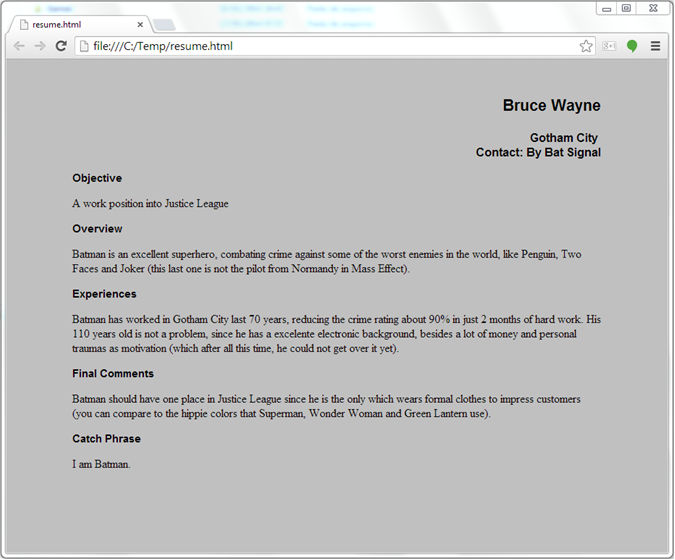
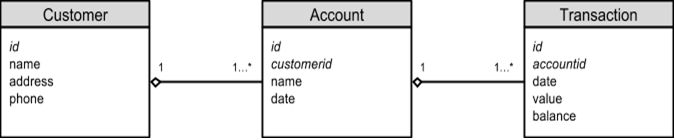
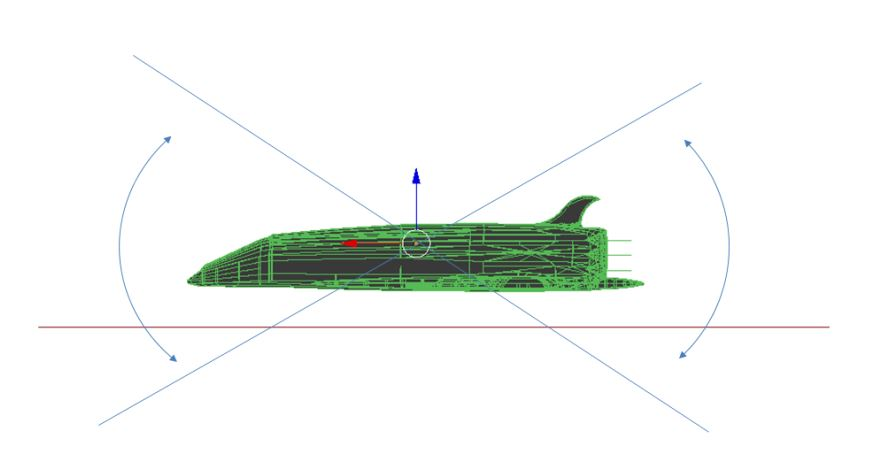

This manual refers to a project made in 2013 in order to help people and programmers which intend to use the artificial intelligence code called Gilgamesh. The Gilgamesh is an Artificial Intelligence library, using an alternative way mixing some concepts between prolog and neural networks. Common users and programmers can use it in a large number of situations (which is attempted to show in this manual).
The main purpose about all this work is to contribute with other as possible, helping people with their own objectives, using the knowledge described here to achieve that. Furthermore, it is expected for programmers use the code or ideas presented here to help other people, finding solutions to problems where computers are better than humans. Originally, the Gilgamesh code has been developed to help in stock market prediction, but it can be used in a wide range of areas. It is expected to receive some suggestions and ideas from you in order to improve it.
History
The Gilgamesh concept was created in the middle of 2013, but their concepts were thought for a long time so it was constructed based on them. All started around 2005, when a group of friends started an uncommitted AI project called Spirit Project. At that time, they made some meetings to learn and study some AI concepts, just for fun. They got good results, but around one year later the project ended up with more unsolved questions and disagreements than when it began. Since the end of Spirit project and during all those years, lots of possible solutions to the unsolved remaining problems came up. Actually, lot of solutions were created for some different concepts and implemented in Gilgamesh (it is up to you to decide if they will serve you or not). In 2013, an opportunity happens to put all the ideas together, releasing the Gilgamesh Artificial Intelligence Project (before it was called as Core Project) and since then, it is being used to predict stock market moves, with satisfactory results.
After a while and being sure about its effectiveness, it was decided to share the code as open source and create this material to help people understand what the creator had in mind. It was created some small programs applied to various areas in order to give a start point for those who want to use them in a similar situation.
All information and code available on this manual are not an academic study about AI or its math concepts. Its intent is to be a practical work for professionals or companies to get practical results using it. For that, it was attempted to provide all kind of help, about the concepts created and about the code developed, keeping everything as simple as possible, trying to achieve not only programmers, but enthusiasts and common public in general. Most concepts in this manual reflect the creator's opinions and his ideas about AI. It has no intention to argue about mathematical models or AI concepts.
Almost all the concepts used into Gilgamesh were done thinking about blocks of information connected among them. It was like if we would have a bunch of neurons where each one could keep an entire block of information as we know. Besides that, it was attempted to use and adjust the code to be close enough about how some psychological concepts works in the brain.
The Gilgamesh's block of information is called atom (like in some other AI programs). An atom can be a simple word, a number, a character or a group of all of them. A group of related atoms is called fact. Let's consider entering the information below in Gilgamesh's memory:
| Type | Atom | Atom | Atom | |
| Fact | DOG | EATS | MEAT | |
| Fact | DOG | EATS | RATION |
Gilgamesh connects atoms creating facts, indicating how many times each one occurred. For that, it uses a counter that works as memory prints called force in code for each fact:
| Type | Atom | Atom | Atom | Force | |
| Fact | DOG | EATS | MEAT | 1 | |
| Fact | DOG | EATS | RATION | 1 |
If we enter the information "DOG EATS MEAT" again, the state in Gilgamesh's memory will be:
| Type | Atom | Atom | Atom | Force | |
| Fact | DOG | EATS | MEAT | 2 | |
| Fact | DOG | EATS | RATION | 1 |
In this case, if the Gilgamesh is requested to answer some like "what does the dog eat?" providing the atoms "DOG" and "EATS" the answer will be "MEAT", since this atom is a member of a fact which occurs twice in memory.
Gilgamesh has a command line interpreter, in order to simplify its general use (remember that you have to have Java 8 or later installed in your computer).
To run Gilgamesh's Command Line in your local computer:
That's it. :)
The Gilgamesh starts with no memory so you have to teach it entering some facts. To teach it, you have to type your atoms (block of information) in a raw way.
Gilgamesh is not programmed to understanding natural language what means if you want to enter the information like "My dog eats meat", you should enter only the essential information you need (dog eats meat).
It can accept commands too if you put ; (semicolon) at the end or the middle of a typed line. It will understand as a command and its respective parameters (if it has any). If the line ends with a ? (question mark), then it will understand as a question for a single answer.
Any other words typed in a line, separated with blank spaces, will be considered as a fact (atoms connected among them). If you want to consider a longer atom (with more than one word), then put those words between ' and ' (single quotes). So, to enter a fact, you can simply type the words you want, followed by ENTER key:
Then to ask something to program, type the atoms you want with "?" at end and press ENTER, like:
The atoms order in a question does not matter. For commands, they are executed by its name followed by ";" and theirs parameters if they have:
Were the values represents the timestamp, force and atoms for that fact.
You can type help to see all supported commands:
You can read a previously created text script with Gilgamesh commands using:
And if you want the generated output in another text file, use:
You can export and import Gilgamesh's memory in a binary file, using:
Each example below has its own file inside Gilgamesh's download file. To execute them, just run the command using the real file name:
This example is about controlling parts flow in a factory, just to demonstrate how Gilgamesh can keep information, without any fact reinforcements. Let's suppose you have a small industry and wants to register all material that enters and exits your plant.
Remember that Gilgamesh is an AI system so it will learn facts - if you want a system that makes calculations, then probable you should customize it through source code or exporting data to a worksheet. To register the material flow, you just need to enter all information. Example:
| Type | Number | Part | Description |
| Item | 12358 | Gear | Part used into gear box, Firebird model |
| Item | 35813 | Wheel | Part used to Corvette, from 1990 to 2010 |
| Item | 81321 | Rod | Replacement part to Porsche, after 2005 |
Now what we have to do is to inform what they are:
After this point you have information inside Gilgamesh Core memory where you can consult any information about those items. This is important because, in fact, it is up to you how to connect your fact atoms. So now you can enter some stock during time:
Every time when you want to query those data, you just need to ask Gilgamesh according what you want to know. Let's suppose you want to get part numbers registered into memory:
After that, you could ask all entries about a specific item:
And then query which parts entered in an specific date:
If you teach Gilgamesh with specific data types (item, part, description etc) it can work similar to a common relational database, when the point is to connect fields. However, there is a certain flexibility using Gilgamesh because you can dynamically define type of atoms, connection among them and how long they will be.
Unfortunately so far, you cannot do any calculations just using the shell command: you have to do any kind of source code customization. Despite those problems, you still can control data like above (actually, this example shows the simplest way to do that).
Let's suppose you have a small mechanical workshop where you fix cars and you would like to improve the quality of your work, anticipating problems that could happen. For all those fixes that you did right and knew about the cause, you could enter one record into Gilgamesh. Below there is a scenario of 1 week of work:
| Defect | Part | Fix | Cause |
| noise | wheel | bearing | bad calibration |
| fail | engine | sparks | bad calibration |
| noise | engine | valve | wasted part |
| fail | suspension | dumper | material defect |
| noise | suspension | dumper | bad calibration |
| noise | suspension | spring | material defect |
| fail | engine | sparks | wasted part |
| fail | wheel | bearing | material defect |
| fail | engine | sparks | bad calibration |
| noise | engine | valve | wasted part |
| fail | suspension | dumper | material defect |
| noise | suspension | dumper | bad calibration |
| noise | suspension | spring | material defect |
| fail | engine | sparks | wasted part |
| noise | wheel | bearing | bad calibration |
| fail | engine | sparks | bad calibration |
| noise | suspension | dumper | bad calibration |
| noise | suspension | spring | material defect |
| fail | engine | sparks | bad calibration |
| noise | suspension | dumper | bad calibration |
| noise | engine | valve | wasted part |
| fail | engine | sparks | bad calibration |
You could enter those facts above like:
After entered all information above, we can start asking questions. So, what if you want to know what is the most common cause to the engine fail?
Now we know that bad calibrations are the most common cause in engine fails. We could check causes for suspension noise:
The most common is bad calibration too. What if we look defects related to bad calibrations?
So we found out that bad calibrations are causing noise in wheels too. In this case, some actions could be taken to verify all calibrations in all cars you fix before delivery the car to the customer. That could improve the quality of your work.
This is probably the example I like most. That is because this is the kind of system which could really help people (actually, it is one of the reasons I have decided to made Gilgamesh as open source). In my opinion, one prediction system like this could reduce medical errors and make the diagnosis process faster and more accurate, helping medics to take decisions. It could be used to find solutions for diseases which we do not know any treatment yet. So, let's consider these things:
We will connect them as below (there are other ways to connect them, though):
For this example, we can have more than a single atom of same type into a fact (btw, I kept atoms as simple as possible). For diseases with their symptoms and causes, single and few facts were used. For treatments, shorter and more facts were created and there is one row for each treated patient. That allows to Gilgamesh chooses the best treatment for each disease. As more information you enter, better answers you will get. After load the script:
Gilgamesh has some medical data and it would be ready to be used by a medic. During a patient consult, a medic can verify these symptoms : "pain", "fever" and "cough". Then, he could starting ask to Gilgamesh find what was the most probable disease. Looking for "pain", it would bring us all diseases which have pain as symptom:
Including "fever" the list would be shorter, since only flu and hepatitis have both symptoms together:
And finally, including "cough":
He got only flu as possible answer. Now, based on all medical treatment records, the medic could find out what is the best treatment for flu:
According treatments that have happened last period, an antiviral treatment is being more effective than others. So, it is possible to conclude that the system is providing some help to medic diagnostics.
Of course that the example above is very rude but the intention is to show how Gilgamesh could be used as a learning system, crossing medical data to find best answers to diseases treatments, among other things. I hope that someone likes this example (and use it in practical ways).
Marketing professional are used to do market researchs in order to identify what customers want. Usually, there are two main kinds of researchs: quantitative and qualitative. Quantitative researchs gives you result in numbers, so it is easy to measure that. In the other hand, qualitative researchs are difficult to measure, since they are related about quality descriptions. Gilgamesh can be used to help in both researchs, but specially for qualitative ones.
Let's suppose you have interviewed a bunch of people in a qualitative research about a shampoo new brand. Now you have all answers, you would you like to know some customers intentions related to your product. In this example, we are going to simplify adjectives in order to simplify the example. First, we have to load the example:
Now we have all opinions about those customers. First of all, let's find out what words respondents have used:
So now, let's find out what customers think about our shampoo. if you want to know what was the opinion which used more "weird" in answers:
That means that more people think that smells of wood and floral are weird. So, let's see what people have realized about the citric smell in our product:
It seems they liked it. You could ask anything you want, like "What do customers think when they have answered 'good price'?", "Has someone answered 'smell strong weird'?" or "What opinions contains 'strong'?". The possibilities are infinite, all depends what you want to know.
Of course that those random data I have generated to the example sometimes do not make any sense (you have atoms like 'good' and 'bad' in the same fact). But the point is to show how you could use Gilgamesh memory to improve your ability to identify market trends, customer wishes etc.
Most examples so far are related to connect a few information types. But you can take some advantages from Gilgamesh if you connect information of same type or if you don't know (or don't want) to classify those information. This example will show you how to connect data of same type (players, in this case). Let's suppose the following example: you are a paintball team manager and have the possibility to assembly your team between 2 and 4 players. To the championship, you would like to know which team configuration is better in order to have the best performance. Usually what team managers do is to choose all those best players and put them together. Very often, combining all best players doesn't mean that the team will be the best one. Now, what you have to do is: find the best players into the best team configuration. Your players are:
James, David, Christopher, George, Ronald, John, Richard, Daniel, Kenneth, Anthony, Robert, Charles, Paul, Steven, Kevin, Michael, Joseph, Mark, Edward, Jason, William, Thomas, Donald, Brian, Jeff, Mary, Jennifer, Lisa, Sandra, Michelle, Patricia, Maria, Nancy, Donna, Laura, Linda, Susan, Karen, Carol, Sarah, Barbara, Margaret, Betty, Ruth, Kimberly, Elizabeth, Dorothy, Helen, Sharon, Deborah
So you will enter to Gilgamesh last year game results. You can do that loading the file:
After that, you could ask something: "What the performance is in a team with Karen and Richard?": Let's see:
Now, what about only Richard and Daniel?
So, we can see that we have a better configuration if we put Daniel, James and Richard together in the same team. Again, there are a lot of ways you can make questions to the code. It will depends what you want to know.
Sometimes, a common user needs to do some kind of work which requests programming knowledge. That implies in a learning curve that often is not requested to that professional main role. To have that task done, the professional has to request some kind of work from a programmer.
Gilgamesh can help with this task, learning a new language and helping to simplify that issue. Actually, it can learn a pseudo code, that could be used by any common user, since he knows what he is doing inside Gilgamesh. The result is much more intuitive than most programming languages (it would be similar what Ruby on Rails does), allowing a user without any programming experience, can do some kind of programming. Let's see what we can do.
Supposing that we would like to allow a common user to create simple html pages, to include them into a human resource website, we could teach Gilgamesh to learn common tasks that the user could do, matching (or "translating") them to html code. We could teach something:
'start the page' <html>
From now on, every time when we type into the console:
'start the page'?-
The answer would be:
<html>
So you can program using Gilgamesh just asking it to answer for what you want to do. E.g.: 'start the page', 'close the page', 'set the name style' etc. Executing the script examples\custom-prog-lang.txt as below, will creates a html file called resume.html. Inside that file, you will see the programming result of a typed pseudo code.
You can open it in a web browser, like Chrome or Firefox:
Imagine now that you work at traffic control. Your target is to reduce the traffic jam in rush hours so you have to synchronize three strategic semaphores (A, B and C) in order to achieve that. The time spent in traffic jams you have to reduce is about a period of 132 minutes during the rush hours. It would be possible to do that if you know what is the best configuration for each semaphore. You have the following information:
You did a test during a lot of days, taking note of all traffic jam duration and about semaphore times. Let's suppose that some of your records are something like:
| Traffic Duration (minutes) | Switch Time A (seconds) | Switch Time B (seconds) | Switch Time C (seconds) |
| 128 | 35 | 50 | 40 |
| 167 | 20 | 15 | 30 |
| 149 | 45 | 30 | 25 |
| ... | |||
Some of those configurations can happen more than one time, having different duration for each measure. For example, you could test the same switch configuration for a whole week (e.g.: A 35s, B 50s and C 40s), so you would have 5 measures with same configuration but different traffic durations. Now, how is it possible to know which configuration has the best performance to reduce the traffic jam? Just feed those information into Gilgamesh, making the traffic jam duration as its fact force, like:
fact; -128; semaphore A 35 B 50 C 40
However, there is a trick here. As Gilgamesh sorts answers from the highest to lowest forces, it would bring us the worst case as first answer. Since we want to know the shortest time, we have to multiply our duration times by -1 to invert its results (this is why we used -128 instead 128). Then when we ask Gilgamesh to answer, it will bring us the shortest duration time instead the long one. Running the script:
It will load all records about traffic jam and their respective semaphore configurations. Now, a simple question could bring us the best configuration for those semaphores:
So it is possible to conclude that the best configuration to reduce traffic jam would be:
That makes your traffic jam duration will remain only for 104 minutes. Work done. It is possible to include in your fact the week day, day time or any information you would think it is relevant to identify the best configuration. Still would be possible that A, B and C would not be a single semaphore, but a whole group of them working together. The possibilities are many.
Sometime, human resource professionals have a lot of problems to find a candidate that fits to some company position, among all those resumes they received. That happens because each person has its own way to do its resume. Very often, we see some companies creating their own human resource database, asking to candidates to register their resumes on those systems. As this registering has no standards about how to do that, some companies can ask different questions about candidates information, which sometimes, can end up in a mess or in annoying forms to fill the templates.
It is possible to use Gilgamesh to help with this process. Basically, the only thing they should do is to input all information available in candidate resumes, using its name and what about that information refers as a ID. Let's suppose that we have the following candidate information:
name, address, objective, skills, experience
So you can load those informations, linking the facts with key words you want, like above. For this example, we use them like below:
Captain Kirk address Enterprise Vessel, where no man has gone before
Running the script as below:
You will load some resumes, like if you had typed them entering all information available in a format like the pattern described before. After that, you can start querying some information, asking for key words you are looking for. Now, let's suppose that you want to find a person to work in sales department so you need someone with convincing skills. Let's take a look for the word 'convince':
Note you have found that there one person with this characteristic as one of his skills. You could search for people which has the experience to take decisions. So, using answerany:
You can see that it is possible to query any word you want, since you enter each resume word as an atom, making bigger facts. It is possible to query much more information according your needs and details about the job opportunity you have, matching them with candidates information. After knowing who has those needs you want, you can ask specific questions like personal details:
It is still possible to query all information of one type, like all names for example:
With those results, would be possible to generate reports, candidate summaries, common characteristics and information among them etc.
Gilgamesh can be used to translate texts. When I am talking about translation, I mean from any language since you provide basic information to the task. In this example, I am going to try providing one way to do that.
The first thing to know is that symbols can represent different things like syllables, things, sounds etc. For this example, I have created some symbols which will act as hieroglyphs transmitting a message. As hieroglyphs, unique symbols can have a specific meaning while combined symbols can have another one.
As smaller the information is (fact), a higher force it should have. If you intend to use this example as reference for another similar translation work, I suggest you to define a scale for fact forces, in order to fit your symbol combinations into it. For now, we just have a combination for 2 symbols what means that for our unique symbols, we will have the force 2 and for combined ones, 1. The first thing we have to do is to teach Gilgamesh about how to connect symbols and their meanings. In this case let's consider our symbols below:
| Symbol | Type | Meaning |
| (-_-) | Unique | sleep |
| _[]_ | Unique | door |
| === | Unique | path |
| /\/ | Unique | snake |
| _/\_ | Unique | house |
| ... | Unique | go |
| (:-) | Unique | happy |
| (o.O) | Unique | surprise |
| (o_o) | Unique | me |
| /*\ | Unique | garden |
| _[]_ /*\ | Combined | weapon |
| ... (-_-) | Combined | death |
Note that combined symbols use a combination of already known symbols to have a different meaning (like hieroglyphs). So, our message is:
(o_o) (-_-)
/*\ /\/ ... _/\_ _[]_
(o_o) (o.O) _[]_ /*\ ... (-_-) /\/
(o_o) (:-)
For facts, we will enter like below:
Unique: fact;2;(-_-) sleep
Combined: fact;1;_[]_ /*\ weapon
If you are a developer using Gilgamesh source code, you could develop a system to first, trying to start finding a best match for combined symbols and then reducing the size of facts to the unique one. The decreasing force to the bigger facts is important because when you try to look for an unique symbol, it will bring you all answers which have that symbol, ordering them from the unique to the combined ones. Let's suppose you have to find a best translation until 5 combined symbols. In this case, we could use something like:
1 unique symbol = force 5
2 combined symbols = force 4
3 combined symbols = force 3
4 combined symbols = force 2
5 combined symbols = force 1
For our example, if we ask to Gilgamesh about an answer using only the symbol (-_-) which has unique and combined meanings, it would bring us first the unique answer:
So, running the script "symbol-translation.txt" we can have the translation answer for our message above, like Indiana Jones translating a caveman's story:
In this example we are going to do a bank account system, acting as a traditional bank account database. Let's consider the following entity relationship model:
In our system, we can have many customers. Each customer can have different accounts (current and investment) and each one of those accounts can have a lot of debit and credit transactions. Besides that, we have to control the balance for each account, which usually could be done using some calculation and recording it in the table "Transaction" inside a relational database.
To get control of each fact taught to Gilgamesh, we can create a id which will refers to just one fact inside its memory, like a single row in a database table. Actually, this is similar how a common system works: users and programmers are used to have a code to identify things in systems, which usually is a number. In this case, we will create standard code for each table above. The customers will have the code "CXXX", where "XXX" is a increasing number or counter. So, we can teach Gilgamesh as the example below:
customer C001 name Harrison Ford
customer C001 address AAA street 12
customer C001 phone 1234-1234
That allows to Gilgamesh (and you) retrieve any single and specific fact when needed. Every time when we have to include another customer, we need to increment our customer code id (e.g. C001, C002, C003 and so on). Now, let's see how we have composed the lines above:
| Table | Customer ID | Column | Value |
| customer | C001 | name | Harrison Ford |
| customer | C001 | address | AAA street 12 |
| customer | C001 | phone | 1234-1234 |
| customer | C002 | name | Angelina Jolie |
| customer | C002 | address | BBB street 23 |
| ... | |||
For accounts, we have to include the composite id to guarantee our fact integrity:
| Customer Foreign ID | Table | ID | Column | Value |
| C001 | account | A001 | type | current |
| C001 | account | A001 | date | 21/04/2013 |
| C001 | account | A002 | type | investment |
| C001 | account | A002 | date | 22/04/2013 |
| C002 | account | A001 | type | current |
Note that we have to repeat the account id (A001, A002 etc) because we have just two kind of accounts (current and investment). As we are creating a fact matching with one customer (C001, C002 etc) there is no problem to duplicate those ids. Another important point is to know that we just need to repeat the account id because we intend to generate duplicated ids to accounts. If our intention was to use a single account id for each record (fact), then would not be necessary to include customer ids (it would be working as unique key for any fact). Continuing, we will do the same for transactions:
| Customer FK | Account FK | Table | ID | Date | Type | Value |
| C001 | A001 | transaction | T001 | 01/01/2013 | debit | -35.13 |
| C001 | A001 | transaction | T002 | 01/01/2013 | credit | 48.03 |
| C001 | A001 | transaction | T003 | 01/01/2013 | credit | 15.94 |
| C001 | A001 | transaction | T004 | 01/01/2013 | credit | 31.59 |
| C002 | A002 | transaction | T005 | 01/01/2013 | debit | -34.95 |
| ... | ||||||
For transactions, we will create a link among date, type of transaction (debit/credit) and its value. We need to keep that structure to ensure the fact will describe one specific condition that happens sometime. And we have to input balances for each account and day (note that we split the balance as another table):
| Customer FK | Account FK | Table | Date | Value |
| C001 | A001 | balance | 01/01/2013 | 159.90 |
| C001 | A001 | balance | 02/01/2013 | 192.92 |
| C001 | A001 | balance | 03/01/2013 | 309.85 |
| ... | ||||
Now, let's execute our script to load all data for this example:
And let's see what we can do.
To query all customer names:
To query the customer code using a surname:
To query all customer information from her code:
To query a specific information (phone) from her code:
To query which account types she has:
To query when she has created the investment account:
To query all transactions from her investment account:
To query all her credit transactions from investment account:
To query all her transactions in a specific date from investment account:
To query all balances for all accounts in a specific date:
Let's suppose you want to make a intelligent drone or robot which is capable to learn by itself some body's control or movement. It is possible to use Gilgamesh's code to make it learn positions getting information from movement sensors (you probably would do that using the source code, but the concept can be demonstrated through Gilgamesh console). The idea of this example is to show how Gilgamesh could learn and use its memory in an ongoing process, as soon as its memory is increasing up. That idea could be used in games too, to control objects or AI characters for a specific task.
Now, let's suppose you have a drone or space vessel in a game which should learn the rotation in one axis. The best angle is 0, identifying that your vessel is in the best rotation to fly (flat position). The Gilgamesh memory should know what is the correction to that angle which would put your vessel again in the best rotation (eg.: if the angle of your vessel is 15 degrees, then the memory has to know that it should correct the angle in -15 degrees to reach 0 for rotation). For each measure of time, a sensor like a gyroscope sends you the current rotation of your object, telling in which degree it is:
To make the code learn, the execution will be in a loop, monitoring and running a logic in this order:
Let's make some assumptions:
- if the correction value applied makes our vessel turns its axis near 0 degrees, then we can consider it as a good value. Otherwise, would be a bad correction since our vessel didn't turn near 0 degrees to the flat position. In this case, we can create a measure to indicate that, as if it would be the sensor response after apply the correction (this result will be used as fact force in Gilgamesh's memory):
result = (minimum value between correction and rotation) - (maximum value between correction and rotation)
Eg.: rotation = 14, correction = 3 (any random value at first time) then the result = (3 - 14) = -11 The -11 is the result after we apply our correction (which will be a random value at first time). This value represents a sensor response indicating what happens after we apply our correction. Any value near 0 is a good value (our vessel rotation is near the flat position: 0 degrees).
- the mutation value is necessary to have variations in our correction value. Think of it like a genetic mutation that happens naturally during new generations. Actually, it could be interpreted like that, since the result of our correction force could be understood like natural selection :) The mutation assumed here will be among -1, 0 or +1 values.
Now, let's simulate the learning process.
The script "drone-controller.txt" into examples folder gives an idea about that kind of control. After run that script which execute those steps above a hundred times, you will get values like:
This happens because Gilgamesh will be learning a better value after each iteration, creating a real memory of which value is better to achieve the flat position for our vessel (0 degrees). As more as you input data, more accurate will be its answers. Note that for rotation 1, 8 and 10 it didn't get the best answer yet because we had entered 100 lines of information. If we continue this process, it would have best answers soon.
Now, think that you can use it in any kind of sensor you want. This is one way of many that it could be used in a robot, drone or game object, to make it learn during the running time.
Gilgamesh can be used to identify some kind of signal pattern in a sequence of data without too much effort. Let's suppose that you work on SETI and you have the duty to analyse some piece of information received from outer space. You want to identify if the signal received has any pattern on it, which could mean a signal sent from any intelligent life form. In this case, let's consider that our signal is formed by letters (not numbers, to keep it easy) and you have a signal like that:
D M Z Q R O D K W F N B C Q Y T L M J X ...
As we don't have any idea how big could be a pattern, let's starting testing it from 2 and 10 combinations. For each step in the sequence, we will insert into Gilgamesh's memory a range of numbers from 2 to 10. Eg.:
Step 1:
D M (from 1 to 2 letters)
D M Z (from 1 to 3 letters)
D M Z Q (from 1 to 4 letters)
D M Z Q R (from 1 to 5 letters)
D M Z Q R O (from 1 to 6 letters)
D M Z Q R O D (from 1 to 7 letters)
D M Z Q R O D K (from 1 to 8 letters)
D M Z Q R O D K W (from 1 to 9 letters)
D M Z Q R O D K W F (from 1 to 10 letters)
Step 2 (walks 1 letter in the sequence):
M Z (from 1 to 2 letters)
M Z Q (from 1 to 3 letters)
M Z Q R (from 1 to 4 letters)
M Z Q R O (from 1 to 5 letters)
M Z Q R O D (from 1 to 6 letters)
M Z Q R O D K (from 1 to 7 letters)
M Z Q R O D K W (from 1 to 8 letters)
M Z Q R O D K W F (from 1 to 9 letters)
M Z Q R O D K W F N (from 1 to 10 letters)
And so on.
To run our example, execute the script "alien-signal.txt":
After this step, Gilgamesh knows all patterns into the signal and we are able to start analyzing the signal.
Let's take a look for most common atoms calling "links" command:
We can see that the most common letter is "H" - that gives us a clue. Now, if we ask about most common pattern using "H" we will see: